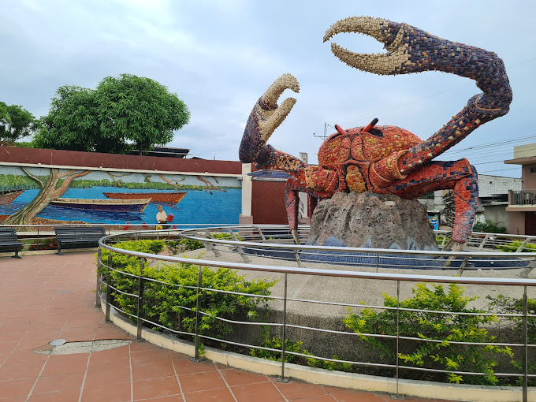

BALAO ES:

Balao, ciudad hospitalaria, tierra del mejor cangrejo llena de gente buena. Una tierra recia, como el árbol del que toma nombre. Ideal para excursiones agroturísticas. Su clima muy fresco de tipo tropical-sabana. Con gran produccion de cacao, banano y frutas tropicales y con una gran flora y fauna que nos diferencia de otros cantones
--------------------------------------------------------- BALAO TOUR -----------------------------------------------------
VER MAS EN:
https://guayas.gob.ec/cantones-2/balao/CONTACTANOS EN:
Facebook:
https://www.facebook.com/alcaldiaciudadanadebalaoUbicanos en:
https://maps.app.goo.gl/vx716a1PSHRRGGQJ6